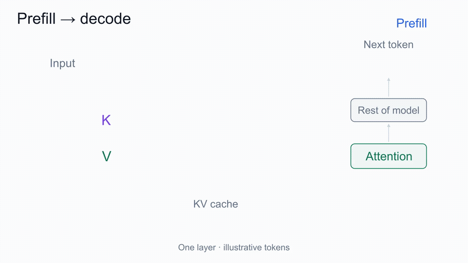
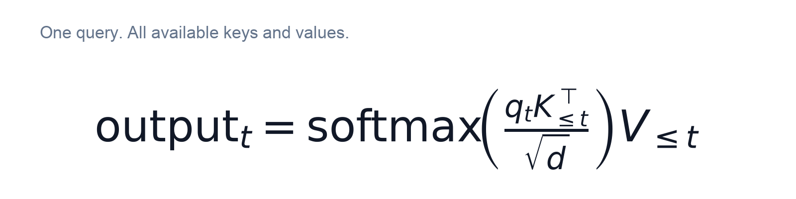
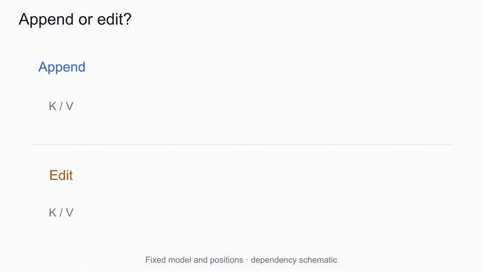
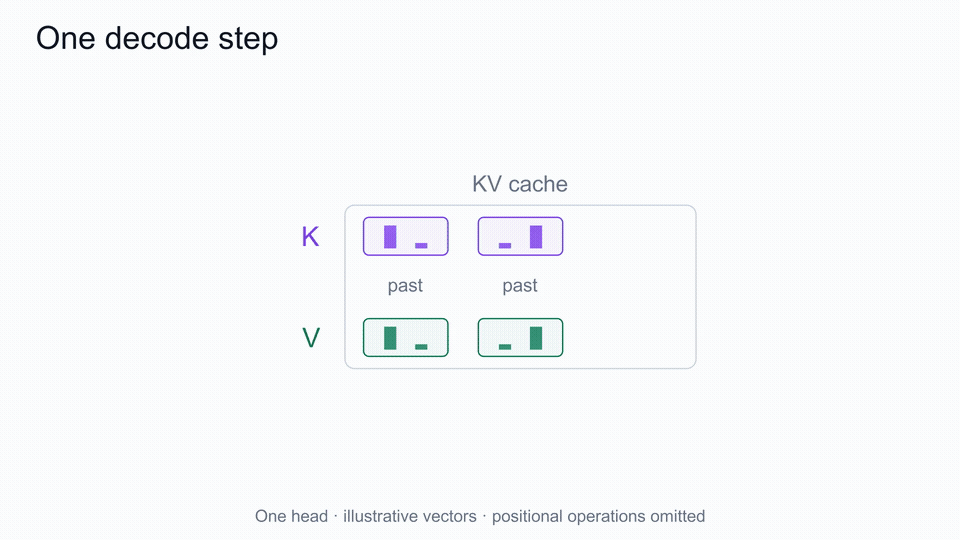
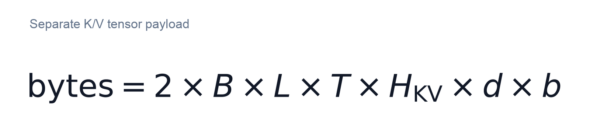
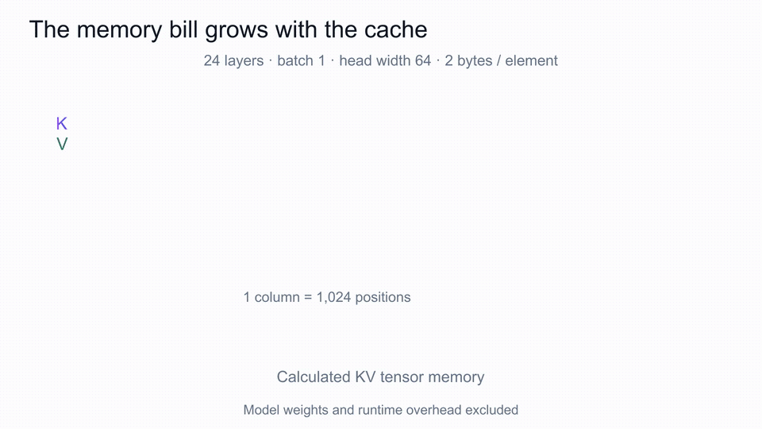
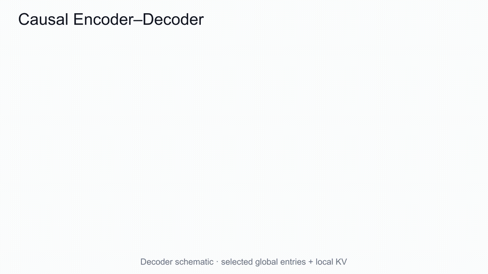

Why LLMs Cache K and V—but Not Q
An LLM can generate a new token without recomputing every earlier token. Understanding why takes us from the attention equation to the memory costs of long conversations—and to architectures that redesign the cache itself.
One prompt, two predictions
Consider the unfinished sentence: “The sky is”. Imagine a model continues with “ blue”, followed by “.”. These are illustrative token pieces, not a measured tokenizer result or model prediction.
Before producing “ blue”, the model processes the prompt. This is prefill. The final prompt position supplies the logits used to select the first output token.
To predict the period, the model then processes “ blue”. It needs information from “The sky is” again. A naive implementation would run the entire growing sequence through the model for every prediction. A KV cache lets it retain useful results from the previous computation.
Notice the timing: selecting “ blue” does not yet create its K/V. Those are computed when that token is fed back into the model to predict what comes next.

Why the name contains K and V
At a particular attention layer, each position has an incoming hidden state. Learned projections produce three vectors: a query Q, a key K, and a value V.
The current query is compared with the available keys to calculate scores. After masking disallowed positions and normalizing the scores, the resulting attention weights determine how the values are combined.
For one head at a new position t, the core calculation is:

Here d is the query/key width. The subscript “≤ t” includes both earlier positions and position t itself; the superscript “⊤” denotes transpose. With a single new position, no padding, and only past/self entries supplied, there are no future positions to mask. Chunked decoding requires a mask that accounts for the cached prefix.
Each old query has already produced its attention output. The next position brings a new query; its calculation does not require the old queries. Earlier keys and values remain useful as sources for that new calculation.
That asymmetry explains the standard KV cache. “Past Q is unnecessary for ordinary autoregressive attention” is more precise than claiming that no specialized implementation ever retains queries.
Context changes representations. Why can we reuse them?
The apparent contradiction is useful: if a token’s representation depends on context, why should a cached representation stay valid as the conversation grows?
Because causal attention restricts which context can affect it.
At position j, the model can use positions up to j. Appending position j + 1 cannot send information backward into j. Under fixed weights, consistent positions, and unchanged inference settings, the earlier computation remains valid. This property carries through causal attention layers and positionwise operations such as an MLP.
Consequently, each layer can retain its earlier K/V instead of recomputing them.

The cache belongs to a particular prefix, position, layer, and model execution. It is not a vocabulary dictionary with one universal K/V pair for the word “bank”.
There is also a first-layer subtlety. Identical incoming embeddings with identical positional treatment can yield identical first-layer projections, even when the preceding text differs. After attention has incorporated earlier context, deeper-layer states can differ. Context dependence follows the computation graph; it should not be assumed at every projection.
Prefill and decode: keep the past, process the new position
Prefill builds the prompt's KV cache. Each layer can process prompt positions in parallel while respecting the causal mask.
Decode extends it one position at a time. The new position passes through every layer. Zoom into one attention head: only its new hidden state h is projected into Q, K, and V.

Notice the timing: append the new K/V before computing attention, so the query can use its own position too. After this head's output has been used downstream, its K/V remain available for later steps; ordinary decode does not need to keep its past Q.
The displayed head output is one head's attention result. The rest of the layer and model still run to produce next-token logits. With compatible inputs and execution settings, caching should preserve the result within numerical tolerance; it saves repeated work without adding learned knowledge.
The memory bill
For a conventional cache with separate, equal-width K and V tensors, identical layer geometry, and T retained positions per sequence, its logical payload is:

The factors are batch size B, layer count L, retained positions T, the number of KV heads per layer, head width d, and bytes per element b. The factor 2 accounts for K and V. Different layer windows or representations require counting the actual tensors instead.
Take a hypothetical model with 24 layers, one sequence, 4,096 retained positions, eight KV heads, head width 64, and two bytes per element. The result is 201,326,592 bytes: 192 MiB.
At 8,192 positions it becomes 384 MiB. At 4,096 positions with four KV heads it becomes 96 MiB. These are calculated payloads, not observed GPU allocations. They exclude model weights, temporary buffers, metadata, and allocator overhead.

Grouped-query attention, or GQA, lets several query heads share K/V heads. For example, four query heads could use two KV heads: Q₁ and Q₂ read KV₁; Q₃ and Q₄ read KV₂. Queries can still produce different weights and outputs. Reducing KV heads is an architectural choice whose quality and speed effects require evaluation; the storage calculation alone cannot establish them.
When can another request reuse the cache?
Suppose two requests begin with the same long document and end with different questions. A serving system may reuse the compatible shared-prefix computation, then process each different suffix separately.
The match concerns the actual model inputs and execution identity—not just similar wording. Changed tokenization, positional treatment, model weights, adapters, or multimodal inputs can invalidate reuse.
Request A: [same document] + “Summarize the risks.”
Request B: [same document] + “List the deadlines.”
If the document prefix has identical token IDs and compatible execution settings, its cached states can be shared. Each question then extends its own computation. Matching text that appears only after different earlier content does not, by itself, establish reusable causal states.
Ordinary reuse within a generation and prefix caching across requests are different policies. A user-visible conversation history does not guarantee that its KV remains resident between turns. If the state was evicted, the runtime must reconstruct what it needs.
After a request ends, its request-local cache can be released. The allocator may keep the freed memory for other work, and a prefix-caching system may deliberately retain reusable blocks. A high reserved-memory reading alone does not establish that the old request is still active.
DeepSeek changes the cache’s dependencies
The separate per-layer K/V picture is a useful starting point, not a universal physical layout. DeepSeek-V4.1-Flash illustrates three different design decisions.
Causal Encoder–Decoder changes the source. Its decoder global KV is derived from the final causal encoder output. Each decoder layer still computes its own main query and local sliding-window KV. Both prompt and generated tokens pass through the causal encoder.
Cross-layer sharing changes storage reuse. In the released configuration, layer 21 creates the decoder global KV bank, which serves layers 21–40. Shared entries do not force equal attention weights: the layers retain distinct queries and local states. Sparse selection determines which global entries are read.
Shared KV representation changes the two-role layout. Inside the reference core-attention kernel, the same selected vector participates in both query matching and weighted output accumulation. This differs from merely storing independent K and V arrays next to each other. Local caches and indexer state still exist.

These dependencies enable a different prefill strategy. For an illustrative 100,000-token project history, the encoder processes the whole prompt and supplies decoder global KV. The report’s serving approach runs the decoder over only the final 128 prompt tokens to reconstruct local state. Earlier history remains accessible through global KV.
This SWA Bounded Replay is approximate. Its reconstructed local state is not mathematically identical to full decoder computation. DeepSeek reports negligible response-quality impact in its evaluations; we have not reproduced that result. The readable public reference also does not benchmark this serving shortcut.
Four questions to carry forward
For any KV-cache claim, ask: what is stored, where does it come from, what makes reuse valid, and which cost is reduced?
For ordinary causal attention, unchanged past K/V remain useful while each new position supplies its own query. Modern designs can change the representation, sharing pattern, or reconstruction strategy. Keeping those choices separate makes it much easier to tell an exact optimization from an architectural change or an explicit approximation.